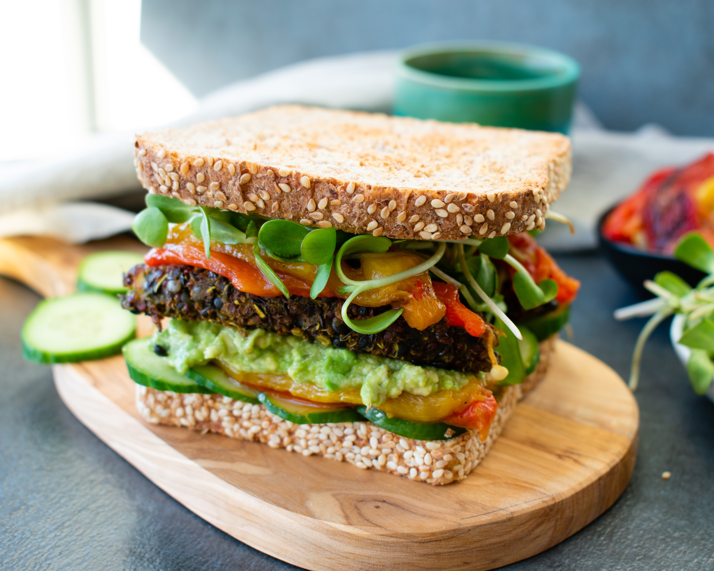
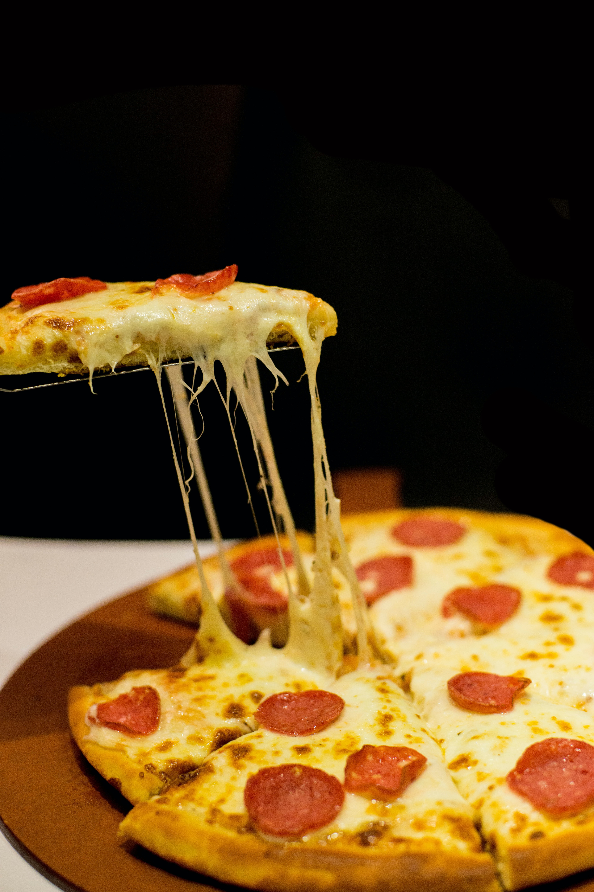
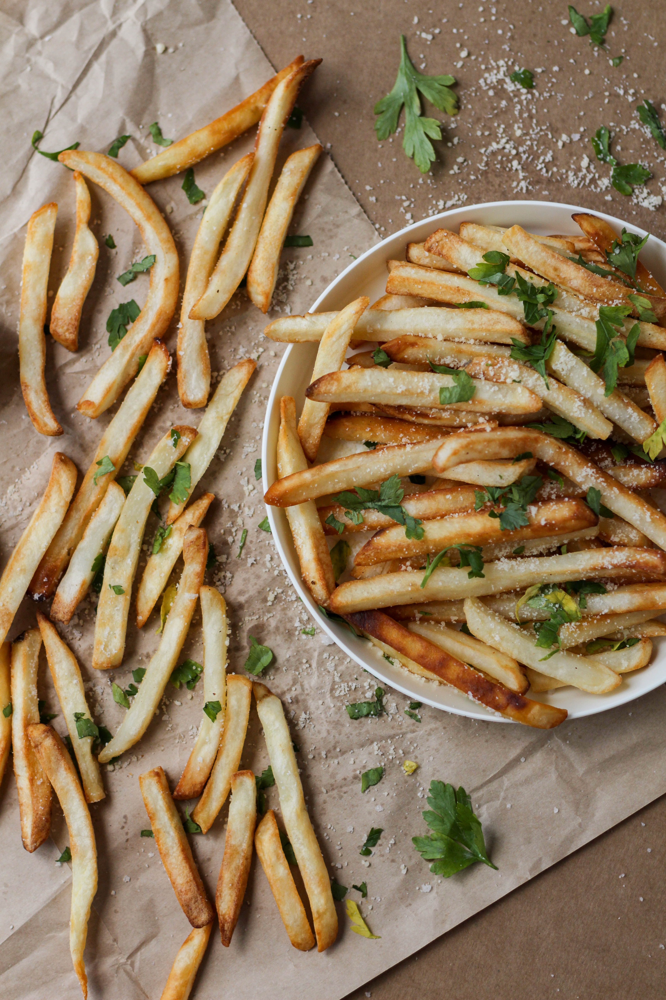
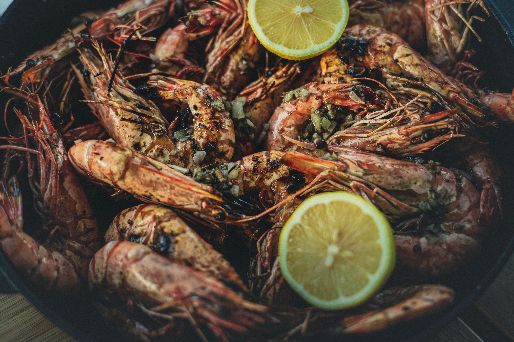

Shawarma is a popular Levantine Arab dish consisting of meat cut into thin slices, stacked in a cone-like shape, and roasted on a slowly-turning vertical rotisserie or spit.
Burger
A hamburger is a food, typically considered a sandwich, consisting of one or more cooked patties—usually ground meat, typically beef—placed inside a sliced bread roll or bun.

Sandwich
A sandwich is a food typically consisting of vegetables, sliced cheese or meat, placed on or between slices of bread, or more generally any dish wherein bread serves as a container
Salad
A salad is a dish consisting of mixed pieces of food, typically with at least one raw ingredient. They are often dressed, and typically served at room temperature.

Pizza
Pizza is a dish of Italian origin consisting of a usually round, flat base of leavened wheat-based dough topped with tomatoes, cheese, and often various other ingredients

French fries
French fries, chips, finger chips, French-fried potatoes, or simply fries are batonnet or allumette-cut deep-fried potatoes, originating from either Belgium or France.
Butter chicken
Murgh makhani anglicised as butter chicken is a curry of chicken in a spiced tomato and butter sauce. It originated in the Indian subcontinent as a curry.
Biryani
Biryani is a mixed rice dish originating among the Muslims of the Indian subcontinent. It is made with spices, rice, and meat, or eggs or vegetables such potatoes in certain varieties.

Grilled tiger shrimps.
Fried shrimp, also known as “Ebi fry” in Japanese, is a popular deep fried shrimp! Plump and succulent shrimps are crumbed with panko (bread crumbs) and deep fried.